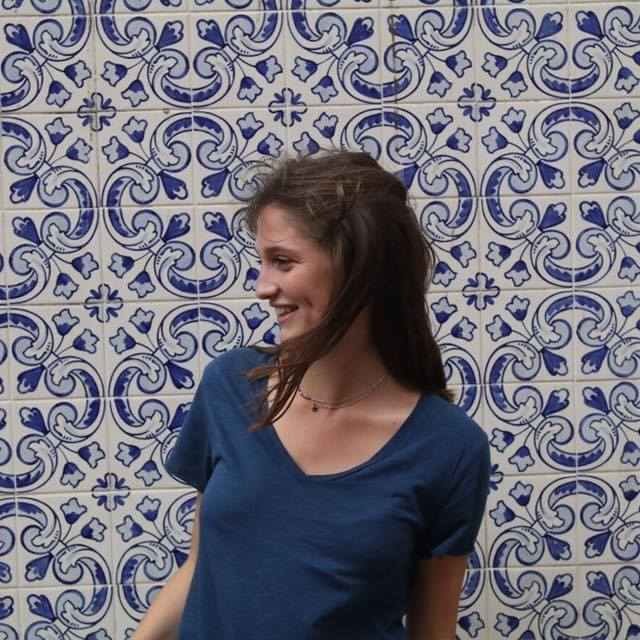
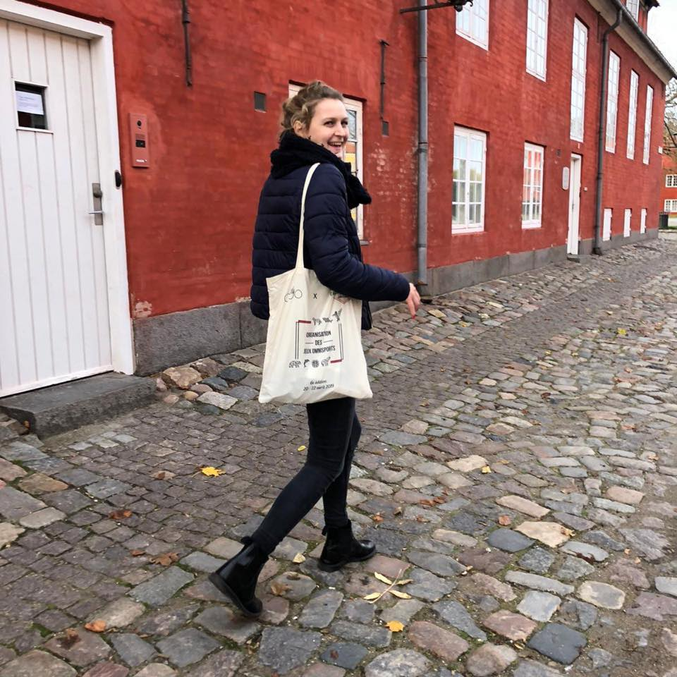

Group members
 
Mes Petites Feuilles offers Smart Gardens that aim to product at home premium aromatic herbs. Over the last five weeks we have been imagining the various obstacles that Mes Petites Feuilles might encounter.
Driver Cards explain the current trends that have an impact on our consumption and behaviour. We have analysed ten different trends, more or less, correlated, that we took into account in our work.
In order to develop our strategy and to have an overall idea of the elements and the world MPF will face in the future, we have gathered a set of factors whose future is uncertain : Political tensions, Capitalism fall, Accessibility, Sustainability, Deep-learning...Considering these factors we tried to build scenarii.